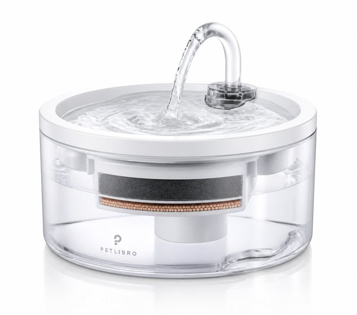
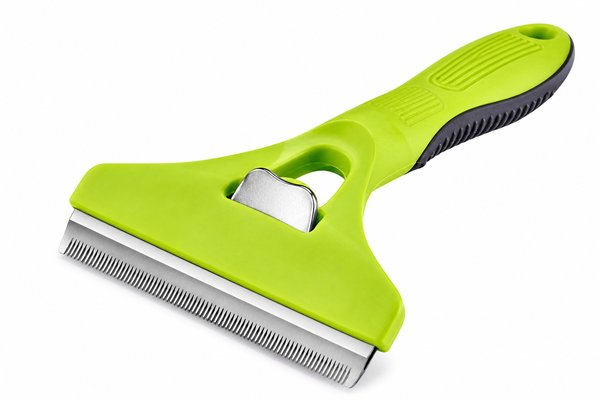
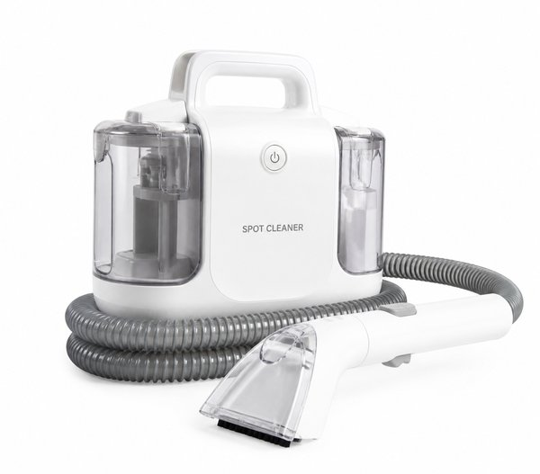
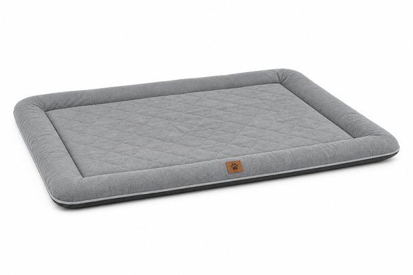
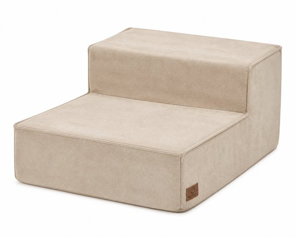
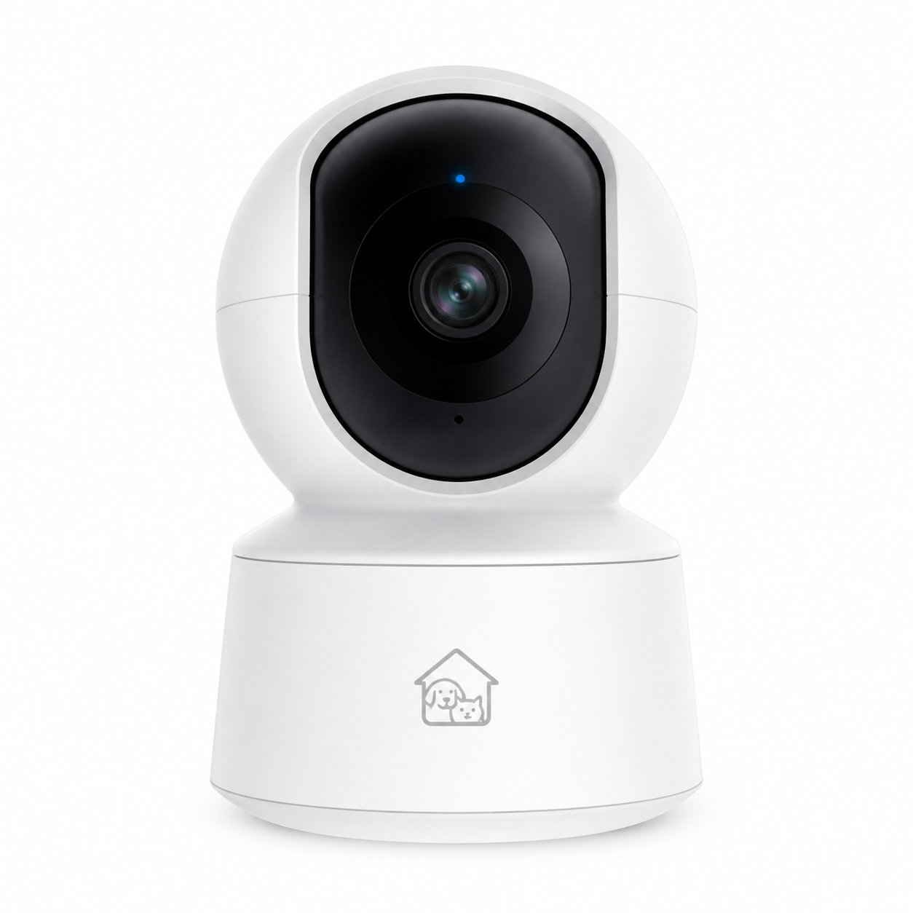
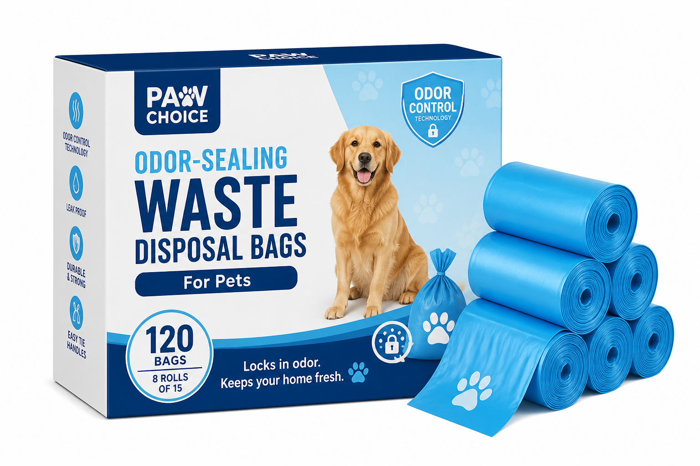
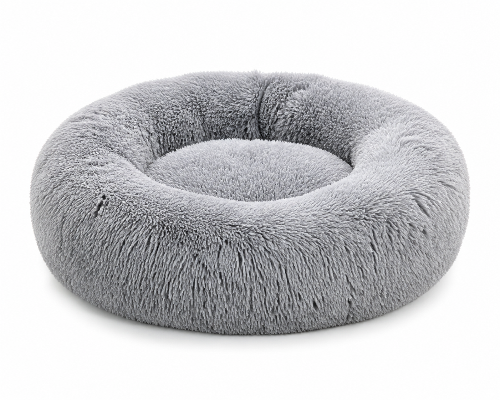
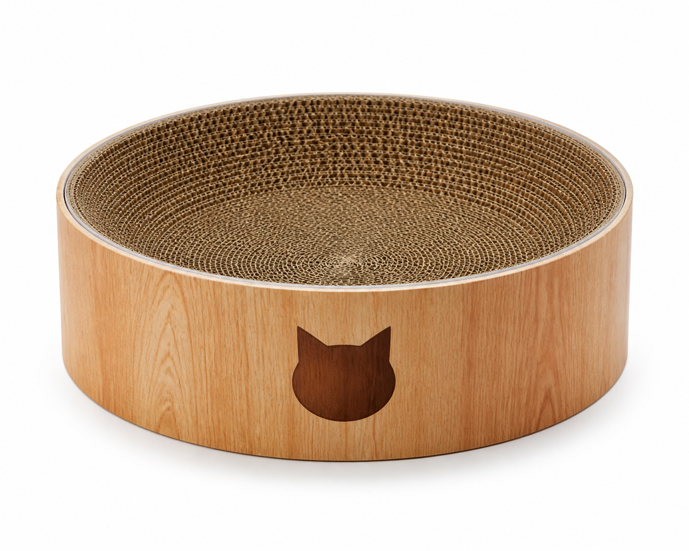

【2026年最新】愛犬・愛猫との暮らしが10倍快適になる！買ってよかったペット便利グッズ・神家電10選
愛犬や愛猫と過ごす毎日はかけがえのない癒しの時間ですが、日中の急な残業時のごはん、抜け毛の掃除、粗相やニオイの処理など、尽きない悩みもありますよね。
「仕事中もペットの様子を見守りたい」「部屋をいつも清潔で無臭に保ちたい」という願いは、最新のペット専用家電や便利グッズを取り入れることで驚くほど快適に解決します。
本記事では、ペットと暮らす編集部が実際に使って「もっと早く買えばよかった！」と心から実感した、愛犬・愛猫との暮らしの質（QOL）が爆上がりする神ペットグッズ10選をご紹介します。
- おすすめ10選 スペック・特徴比較表
- BEST 1｜カリカリマシーンSP カメラ付き自動給餌器 スマホ遠隔操作
- BEST 2｜猫・犬用 コードレス自動給水器 循環式 軟水化フィルター付き
- BEST 3｜抜け毛すっきりプロツール 中型犬/猫用 短毛・長毛種別
- BEST 4｜リンサークリーナー RNS-300 カーペット・ソファ水洗い掃除機
- BEST 5｜ずっとね 洗える防水シーツ ワイドサイズ 抗菌消臭加工
- BEST 6｜ドッグステップ 2段 室内犬用 階段スロープ 滑り止め付き
- BEST 7｜Tapo C200 パンチルト ネットワークWi-Fiカメラ 見守り
- BEST 8｜驚異の防臭袋 BOS ペット用 うんちが臭わない袋 SS/Sサイズ 200枚入
- BEST 9｜ふわふわ 遠赤外線 ドーナツ型 ペットベッド 丸型ぬくぬくクッション
- BEST 10｜バリバリボウル 猫柄 木目調 爪とぎベッド すり鉢構造
- 🎁【読者限定】完全無料で試せる人気サービス
- まとめ：生活をラクにする最初の一歩
| 順位 | 商品名 | ブランド | 最大の特徴・おすすめ理由 | 総合評価 |
|---|---|---|---|---|
| BEST 1 | カリカリマシーンSP カメラ付き自動給餌器 スマホ遠隔操作 | うちのこエレクトリック | スマホからリアルタイム動画で様子を確認しながら手動・自動で給餌 | 4.9 ★ |
| BEST 2 | 猫・犬用 コードレス自動給水器 循環式 軟水化フィルター付き | Plus AQua（プラスアクア） | 流れるお水に猫や犬が興味を持ち飲水量が大幅に増加 | 4.9 ★ |
| BEST 3 | 抜け毛すっきりプロツール 中型犬/猫用 短毛・長毛種別 | FURminator（ファーミネーター） | 軽く撫でるだけでごっそり抜け毛が取れて部屋の掃除が圧倒的にラクに | 4.9 ★ |
| BEST 4 | リンサークリーナー RNS-300 カーペット・ソファ水洗い掃除機 | アイリスオーヤマ | 丸洗いできない布製ソファやラグの粗相汚れが驚くほどキレイに落ちる | 4.8 ★ |
| BEST 5 | ずっとね 洗える防水シーツ ワイドサイズ 抗菌消臭加工 | Petio（ペティオ） | 裏面完全防水で下の布団やマットレスをしっかり死守 | 4.8 ★ |
| BEST 6 | ドッグステップ 2段 室内犬用 階段スロープ 滑り止め付き | アイリスオーヤマ | 高所からのジャンプによる骨折やヘルニアのリスクを効果的に予防 | 4.8 ★ |
| BEST 7 | Tapo C200 パンチルト ネットワークWi-Fiカメラ 見守り | TP-Link（ティーピーリンク） | アンダー4,000円台とは思えない高画質とスムーズな首振り遠隔操作 | 4.9 ★ |
| BEST 8 | 驚異の防臭袋 BOS ペット用 うんちが臭わない袋 SS/Sサイズ 200枚入 | BOS（ボス） | 結んだ瞬間に強烈な悪臭を完全密閉し室内のゴミ箱に捨てても無臭 | 4.9 ★ |
| BEST 9 | ふわふわ 遠赤外線 ドーナツ型 ペットベッド 丸型ぬくぬくクッション | PET PARADISE | 電気を使わない遠赤外線綿で留守番中も低温やけどの心配ゼロで極暖 | 4.8 ★ |
| BEST 10 | バリバリボウル 猫柄 木目調 爪とぎベッド すり鉢構造 | 猫壱（necoichi） | 猫が吸い込まれるように入っていく絶妙なすり鉢カーブ設計 | 4.9 ★ |
カリカリマシーンSP カメラ付き自動給餌器 スマホ遠隔操作

高画質カメラとマイク・スピーカーを内蔵し、スマホアプリから外出先でもペットの顔を見ながらごはんをあげられるスマート自動給餌器。タイマー設定で朝早いおねだり鳴きから解放され、留守番中の不安を一掃します。
- スマホからリアルタイム動画で様子を確認しながら手動・自動で給餌
- 双方向マイクで飼い主の声を届けられペットも安心
- フードタンクが密閉構造で酸化やいたずらをしっかり防止
- Wi-Fi環境（2.4GHz帯）の設定が初期に必要
猫・犬用 コードレス自動給水器 循環式 軟水化フィルター付き

ペットの泌尿器の健康を守る軟水化フィルター搭載の静音循環給水器。常に流れるキレイなお水でペットの飲水量が自然とアップ。コードレスポンプ構造でお手入れ時の感電リスクがなく、丸洗いも超簡単です。
- 流れるお水に猫や犬が興味を持ち飲水量が大幅に増加
- ポンプが超静音仕様で寝室に置いても水の流れる音が気にならない
- 軟水化フィルターで水道水のカルシウム・マグネシウムを低減
- 月に1回程度のフィルター交換が必要
抜け毛すっきりプロツール 中型犬/猫用 短毛・長毛種別

アンダーコート（不要な抜け毛）だけを最大90%ごっそり除去する大定番ブラシ。トップコートを傷つけずに軽く撫でるだけで驚くほどの抜け毛が取れ、部屋の中に舞う毛や洋服への付着が劇的に減ります。
- 軽く撫でるだけでごっそり抜け毛が取れて部屋の掃除が圧倒的にラクに
- ワンプッシュボタンでブラシに挟まった毛を一瞬でゴミ箱へポイ
- 毛球症（毛の飲み込みによる嘔吐）の予防にも効果的
- 気持ちよく取れすぎるので1箇所に当てすぎない注意が必要
リンサークリーナー RNS-300 カーペット・ソファ水洗い掃除機

水を吹きかけながらカーペットやソファ、車のシートの奥の汚れを強力バキュームで吸い取る大ヒット布製品用クリーナー。ペットの粗相やおしっこ汚れ、嘔吐跡のシミとニオイを根こそぎ水洗いできます。
- 丸洗いできない布製ソファやラグの粗相汚れが驚くほどキレイに落ちる
- 水だけで汚れを浮かせて吸い取るためペットにも完全安全
- 透明タンクで汚れが吸い取られていく様子が一目で分かり爽快
- 掃除機のような動作音がやや大きめ
ずっとね 洗える防水シーツ ワイドサイズ 抗菌消臭加工

表面は吸水速乾、裏面は完全防水ポリウレタンラミネート加工で水分を1滴も下に通さない洗えるペットシーツ。粗相対策としてソファやベッドの上に敷いておくだけで、大惨事を100%防げます。
- 裏面完全防水で下の布団やマットレスをしっかり死守
- 洗濯機で何度も繰り返し洗えて使い捨てシーツより経済的
- 滑り止め加工付きでペットが走ってもズレにくい
- 脱水時に洗濯機のエラーが出やすいため水切りに注意
ドッグステップ 2段 室内犬用 階段スロープ 滑り止め付き

ソファやベッドへの昇り降りで愛犬の足腰や膝の関節（パテラ・椎間板ヘルニア）にかかる衝撃を和らげる2段ドッグステップ。沈み込みすぎない適度なウレタンフォームで、小型犬やシニア犬も安心して昇り降りできます。
- 高所からのジャンプによる骨折やヘルニアのリスクを効果的に予防
- 底面に滑り止め付きで勢いよく登ってもズレずに安全
- 汚れをサッと拭き取れるレザー調または洗えるファブリックカバー
- 最初は怖がって使わない犬もいるためオヤツでの誘導が必要
Tapo C200 パンチルト ネットワークWi-Fiカメラ 見守り

首振り機能（水平360度・垂直114度）と暗視ナイトビジョン、動作検知通知を備えた超高コスパ見守りカメラ。スマホから部屋全体をぐるりと見渡せ、ペットがどこにいるかいつでも一目で把握できます。
- アンダー4,000円台とは思えない高画質とスムーズな首振り遠隔操作
- 真っ暗な部屋でも鮮明に映る赤外線ナイトビュー機能
- 動体検知でペットが動いた瞬間スマホへリアルタイム通知
- クラウド録画機能は有料サブスク（microSDカード録画なら無料）
驚異の防臭袋 BOS ペット用 うんちが臭わない袋 SS/Sサイズ 200枚入

医療向け開発から生まれた驚異の防臭素材を採用し、うんちを入れて結ぶだけで鼻を近づけてもニオイが全くしない魔法のゴミ袋。散歩中の持ち帰りや部屋のゴミ箱の悪臭トラブルを100%解決します。
- 結んだ瞬間に強烈な悪臭を完全密閉し室内のゴミ箱に捨てても無臭
- 散歩の持ち帰り中もカバンの中が臭わない安心感
- 1枚ずつ取り出しやすいティッシュ式ボックスパッケージ
- 一般的なポリ袋と比べると1枚あたりの単価がやや高め
ふわふわ 遠赤外線 ドーナツ型 ペットベッド 丸型ぬくぬくクッション

ペットの体温をじんわり蓄熱する遠赤外線綿を包み込んだ極上のドーナツ型ベッド。アゴを乗せやすいふかふかの縁と毛足の長いシャギーボアで、入った瞬間に丸くなってスヤスヤ熟睡してくれます。
- 電気を使わない遠赤外線綿で留守番中も低温やけどの心配ゼロで極暖
- 縁にアゴを乗せてリラックスできるペット大喜びのラウンド形状
- 洗濯ネットに入れて丸洗いでき常に清潔を維持
- ボリュームがあるため購入前に設置スペースのサイズ確認が必要
バリバリボウル 猫柄 木目調 爪とぎベッド すり鉢構造

猫の体にぴったりフィットするすり鉢状の爪とぎベッド。研ぎカスが出にくい高密度ダンボールを採用し、爪を研いだ後はそのまま丸くなって気持ちよさそうに眠れます。爪とぎ部分は交換可能で長く使えます。
- 猫が吸い込まれるように入っていく絶妙なすり鉢カーブ設計
- 爪とぎ部分だけを交換リフィルでき本体をずっと再利用できる
- インテリアに自然と溶け込むおしゃれな木目調デザイン
- 大型の長毛猫（6kg超）には少し窮屈に感じる場合がある
日々の暮らしや買い物を楽しむなら、人気雑誌1,000誌以上がスマホやタブレットで読み放題の「楽天マガジン」が圧倒的におすすめです！初回31日間は完全無料で、無料期間中に解約すれば料金は1円もかかりません。
＼ 読者負担0円！雑誌1,000誌読み放題 ／楽天マガジン 31日間無料お試しを詳しく見る →
💡 まとめ：生活をラクにする最初の一歩
便利なペットグッズは、飼い主の手間を減らすだけでなく、大切なペットの健康管理と快適な居場所づくりに直結します。決まった時間に適量のごはんをあげられる自動給餌器や、いつでも新鮮な軟水が飲める循環給水器など、ペットファーストの優秀な道具を味方につけて、愛犬・愛猫とのかけがえのない時間をより幸せに過ごしてみませんか。
楽天市場では「5と0のつく日」や「お買い物マラソン」などのキャンペーンに合わせて購入すると、ポイント還元が最大化してお得に手に入ります。ぜひチェックしてみてくださいね。